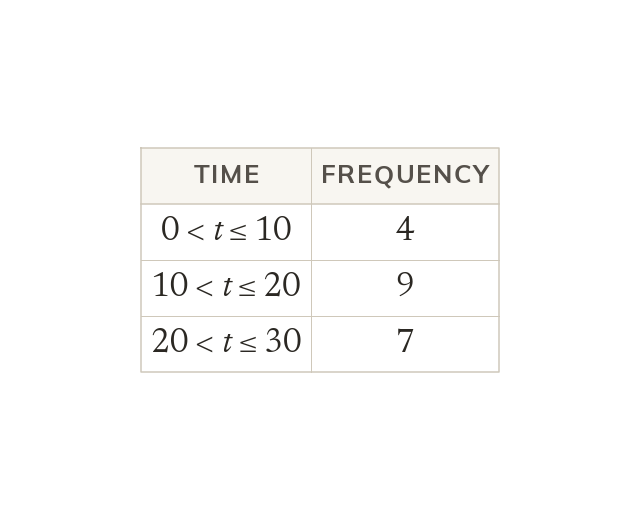
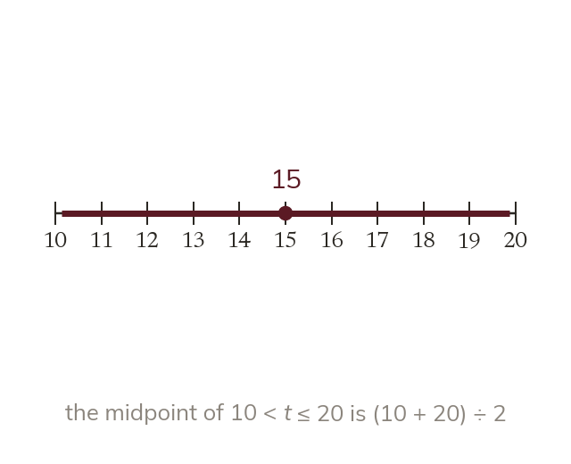
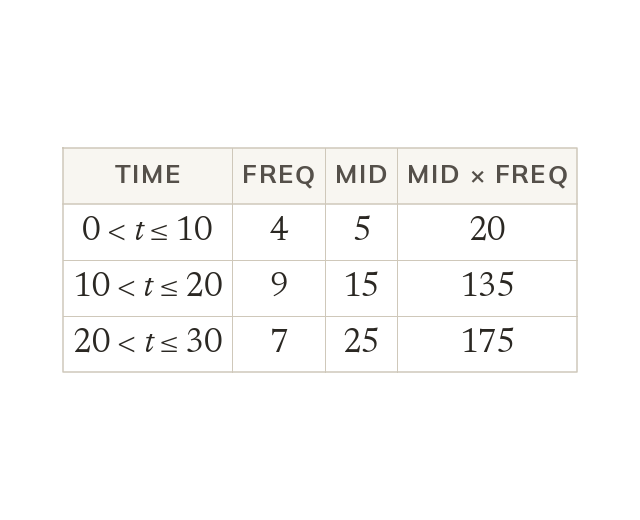
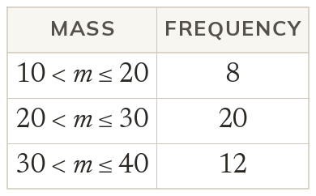
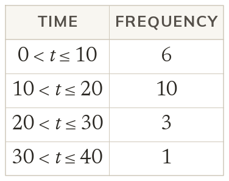
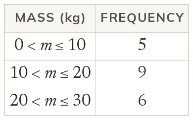
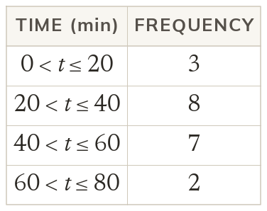
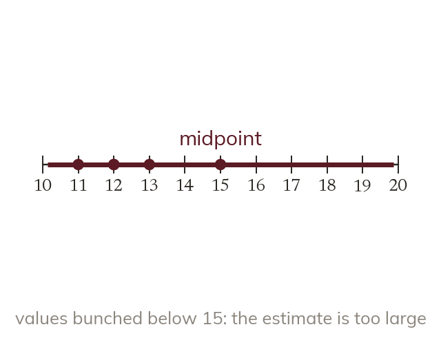

Grouping hides the values
When data are grouped, the exact values are lost. So the mean of grouped data can only be estimated.
Surveys often record data in groups, such as ages 20 to 30. Today we estimate a mean when the exact values are lost.
Work down the page at your own pace. Write every answer in your book first, then click to check it.
Read each card, then follow the worked examples one step at a time.

When data are grouped, the exact values are lost. So the mean of grouped data can only be estimated.

Each value in a class is taken as its midpoint. The midpoint of 10 < t ≤ 20 is 15.

Multiply each midpoint by its frequency, and add. Divide by the total frequency. Here, 330 ÷ 20 = 16.5 minutes.


Pick an answer. If it's wrong, the feedback tells you which mistake it was.


Read each card, then follow the worked examples one step at a time.

The estimate treats every value in a class as its midpoint. It is exact only if values spread evenly about the midpoint.

If the values sit mostly below their class midpoints, the estimate is too large. If they sit mostly above, it is too small.
Pick an answer. If it's wrong, the feedback tells you which mistake it was.
Finished? Next lesson: 10.18.4 The Modal and Median Class.
Log in, then search for a code to practise that skill.